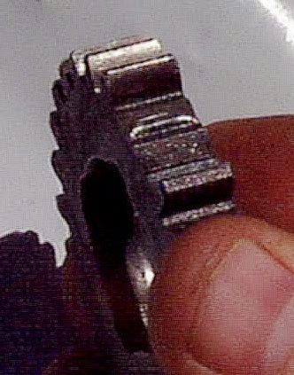

A whine or howl that you hear in certain gears, which rises and falls with road speed. Gear teeth and gearbox bearings whine when they wear, pit or lack oil. But a dry or tight chain, a worn wheel bearing and engine noises can sound very similar, so the first job is to find where the noise really comes from. A faint whine has always been there on some engines; a new or growing one is the warning.
Is it safe to ride?
Ride with care. A whine alone rarely stops the bike, but if it turns into grinding, knocking or the gears feel rough, stop: a breaking gear or bearing can lock the gearbox and the rear wheel.
Quick checks first
- Check the oil level.
- Look at the chain: dry, rusty or too tight?
- Note which gears whine and at what speed.
Diagnose it step by step
1On a quiet road, ride at a steady speed where you hear it. Pull the clutch and let the engine idle while you roll. Does the whine stop?
- Yes: it comes from the engine or gearbox, which only carry load when the clutch is engaged. Go to step 2.
- No, it continues at the same road speed with the clutch pulled: it comes from the chain, wheels or tyres. Go to step 5.
2Does the whine change when you change gear at the same road speed?
- Yes: likely the gearbox. Go to step 3.
- No, it follows engine revs even in neutral at standstill: it is engine noise. Go to Whining noise from the engine.
3Is the oil level correct and the oil clean?
- No: Check the engine oil level and top up or change it. The gearbox shares the engine oil on most commuter bikes.
- Yes: go to step 4.
4Drain or sample the oil. Is there glitter, flakes or chunks of metal?
- Yes: stop riding. See Metal particles or flakes in the oil and Inspect drained oil for clues.
- No: a gear or bearing is likely wearing. Go to Assess internal gearbox faults. Note which gears whine; it helps the workshop.
5Is the chain dry, rusty or too tight?
- Yes: Clean and lubricate the chain, Check and adjust chain slack.
- No: go to step 6.
6With the bike on the stand, does a wheel feel rough or rumbly when you spin it by hand, or does it have play?
- Yes: Check wheel bearings; see Rumbling or grinding from a wheel.
- No: use a Road test to diagnose a fault with an experienced mechanic.
Causes, most likely first
| Cause | How to confirm | Fix |
|---|---|---|
| Dry or tight chain | Noise stays with clutch pulled | Clean and lubricate the chain |
| Low or old oil | Level low, oil dark | Check the engine oil level |
| Wheel bearing | Rough when spun by hand | Check wheel bearings |
| Worn gear teeth or gearbox bearing | Whine in certain gears, clutch-dependent | Assess internal gearbox faults |
| Broken, bent or debris-struck gear tooth | Broken teeth are usually noisy. If nothing looks broken, look for a bent tooth or a chip of metal stuck on one | Replace the damaged gear together with its mate on the other shaft: Assess internal gearbox faults |